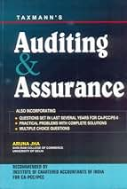

Auditing and Assurance

1. Structure and Content
The book is organized into comprehensive sections that cover various aspects of auditing and assurance:
Introduction to Auditing:
Understanding the concept of auditing and its importance in the business environment.
Types of audits (internal, external, government, etc.) and their characteristics.
Auditing Standards:
Overview of auditing standards and guidelines, including International Standards on Auditing (ISA) and Generally Accepted Auditing Standards (GAAS).
Audit Planning and Risk Assessment:
Importance of audit planning and the audit process.
Identifying and assessing risks associated with financial statements.
Internal Control:
Evaluation of internal control systems and their role in the auditing process.
Techniques for testing the effectiveness of internal controls.
Evidence and Documentation:
Understanding audit evidence and the types of evidence required.
Documentation standards and practices in auditing.
Audit Procedures:
Detailed examination of audit procedures, including substantive and control tests.
Techniques for conducting various types of audits (e.g., financial, compliance, operational).
Reporting and Opinion:
Preparation of audit reports and the auditor's opinion.
Types of audit opinions and their implications.
Ethics and Professionalism:
The ethical responsibilities of auditors and the importance of professional conduct.
Overview of the regulatory framework governing auditing practices.
2. Writing Style and Approach
Clarity and Accessibility:
Aruna Jha writes in a clear and engaging style, making complex auditing concepts easier to understand.
Real-World Examples:
The book uses practical examples and case studies to illustrate the application of auditing principles.
Detailed Explanations:
Each topic is thoroughly explained, ensuring that students grasp both theoretical and practical aspects of auditing.
3. Key Features
Comprehensive Coverage:
The book provides in-depth coverage of all essential aspects of auditing and assurance, ensuring a well-rounded understanding.
Latest Updates:
Regularly updated to reflect changes in auditing standards, practices, and regulatory requirements.
Self-Contained Resource: Designed as a standalone resource for students preparing for CA and other professional exams.
4. Educational Tools
Chapter Summaries:
Summaries at the end of each chapter highlight key concepts for quick review.
Illustrative Problems:
Numerous illustrative problems and exercises help students apply their knowledge practically.
Practice Questions:
Each chapter typically concludes with practice questions to test understanding and reinforce learning.
5. Strengths
Authoritative Resource:
Written by a recognized expert in the field of auditing, making it a trusted source for students and professionals alike.
User-Friendly Layout:
The book is well-organized and easy to navigate, facilitating efficient learning.
Practical Application:
Focuses on real-world applications of auditing principles, preparing students for professional challenges.
6. Criticism
Complexity for Beginners:
Some beginners may find certain sections complex and may need supplementary materials to fully grasp the concepts.
Depth of Coverage:
Advanced students may seek more in-depth discussions on specialized auditing topics.
Why It’s a Good Choice
Exam Preparation:
Well-aligned with the CA syllabus and other professional courses, making it a suitable resource for exam preparation.
Practical Relevance:
The emphasis on practical applications helps students understand the implications of auditing in real-world scenarios.
Comprehensive Understanding:
Provides a thorough grounding in auditing practices, essential for anyone pursuing a career in accounting or finance.